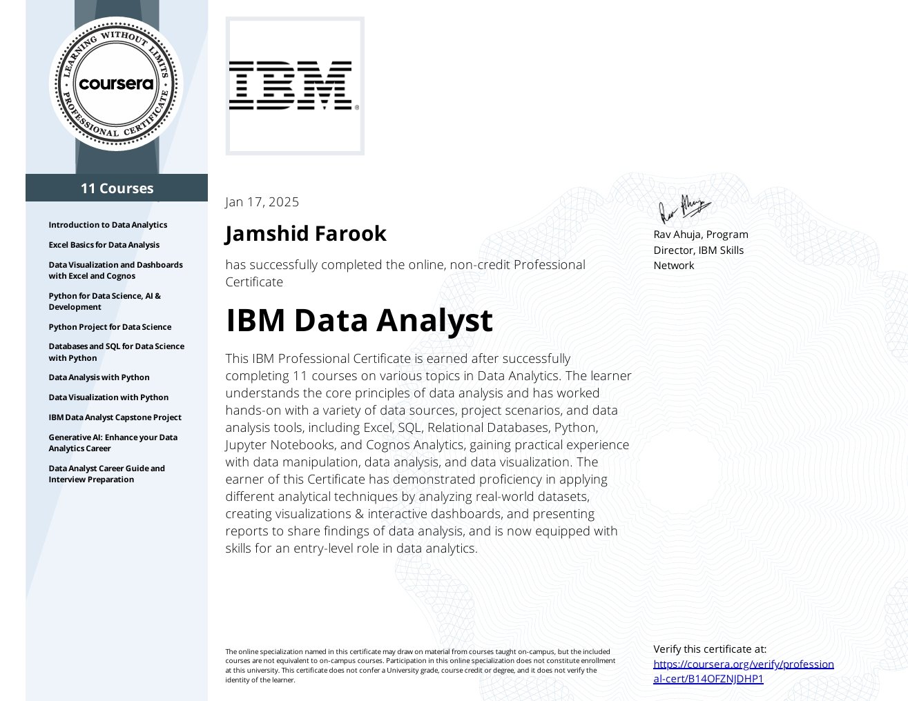

Detail-oriented Data Analyst with hands-on experience in Python, SQL, Excel, and data visualization tools. IBM Data Analyst Certified with proven experience in dashboards, real-world datasets, and actionable insights.
IBM Data Analyst Professional Certificate
I am a passionate and detail-driven Data Analyst with a strong foundation in transforming raw, unstructured data into meaningful insights. My expertise spans across Python, SQL, Excel, and BI tools like Power BI and Tableau, enabling me to explore datasets deeply, uncover trends, and build clear, impactful visual stories.
Power BI dashboard for tracking deal pipeline, conversions, and revenue stages.
Power BI • Business AnalyticsRevenue trends, monthly growth analysis, and KPI monitoring dashboard.
Power BI • Financial AnalyticsHR analytics dashboard to monitor staff absences, leave patterns, and workforce health.
Power BI • HR AnalyticsSupport ticket performance, response time, and customer satisfaction insights.
Power BI • Customer AnalyticsLet’s connect for data projects, freelance work, or full-time opportunities.